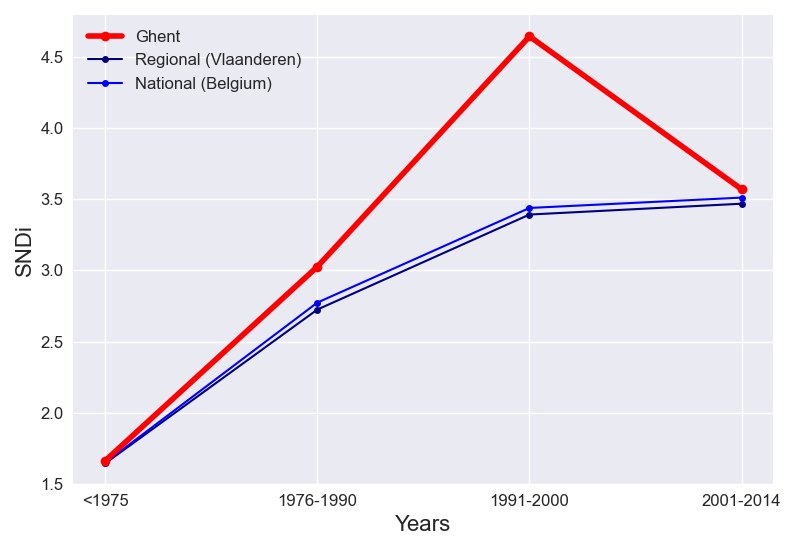

The cumulative and incremental level of street network disconnectivity in Ghent do not follow the same trend. Cumulative SNDi is increasing steadily over time.
Taking into account all roads in Ghent, the overall level of street network sprawl is 1.87. In Ghent, new street layouts initially increased in level of sprawl, until the peak in 1991-2000.
The total level of sprawl in Ghent is lower than the regional level. Ghent does not follow the regional trend: Between 1991-2000 and 2001-2014, regional SNDi was increasing instead.
Compared to Belgium, the level of sprawl in Ghent is lower overall. Ghent does not follow the national trend. Between 1991-2000 and 2001-2014, national SNDi was increasing instead.
To date, Ghent is the 4th-most disconnected city out of the 12 cities in Vlaanderen. It has maintained its place in the ranks since 1975. In <1975, it ranked 4th, ranked 7th in 1976-1990 and ranked 3rd in 1991-2000 and ranked 5th in 2001-2014.